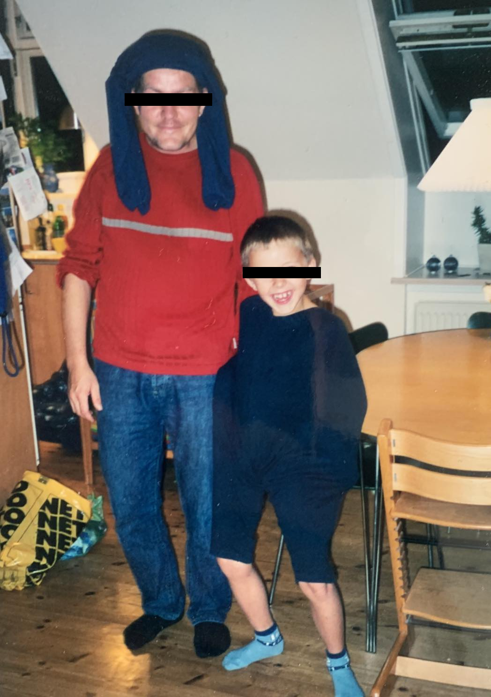

FRA FAR
MIN FAMILIE HAR FORLADT MIG
Så skete det
Vores våbenhvile blev til separation
Midlertidige løsninger blev permanente
Nu var det min tur
Jeres tur
Til at forlade mig
Nu står jeg alene
Alene igen
Det var hendes idé at blive skilt
Mine relationer falmer med alderen
Som ungdommens og faderskabets momentum aftager
Mens jeg synker dybere
Og drukner alene i mørket
Med et ansvar for mine børn
Et ansvar jeg ikke kan bære
Som min far før mig
Lever jeg med konsekvensen
Af den manglende faderfigur
Med ansvaret om at bryde det ubrydelige mønster
Jeg søgte flugt i en lejlighed i Avedøre
For at lade tiden læge mine sår
Hvordan taler man med sine børn om hvad der skete
Hvis man ikke selv tør at tale om det
Samtalen vi aldrig fik
Stilheden talte for mig
Om et traume vi aldrig gav slip på
Mens vi uopmærksomt gav slip på hinanden
I 23 år har du været hos mig
Nu kan vi ikke engang se hinanden i øjnene
Eller lades om vi er et af de par
Der er gode venner efter skilsmissen
Jeg vil aldrig kunne kigge dig i øjnene længere
Men jeg er taknemmelig for dig
Hvad du har givet mig og lært mig
Hvilke relationer du har hjulpet mig med
Mit faderlige fravær
Var resultatet af skilsmissen
Vi fik en gensidig tøven
Til at tage kontakt
Og endte med at cutte kommunikationen
I hvert fald for nu
Nu har jeg ikke set jer i 2 måneder
I mit nye liv
Føler jeg det er for sent at forenes
Jeg forestiller jer i nye dimensioner
Som jeg aldrig bliver en del af
Jeg håber stadig jeg sidder fast i jeres minder
Og husker den barndom jeg fik lov at give jer
Vi glædes over hinandens nye liv
Jeg står tilbage med et smil
For selv i adskillelsen
Uenighederne, skænderierne, vreden og sorgen
Elsker vi stadig hinanden

Børns vilkår: ForældreTelefonen: 35 55 55 57
Mig i midten: Børnenes skilsmissetelefon: 20 60 05 50
Mødrehjælpen - Skilsmisserådgivning